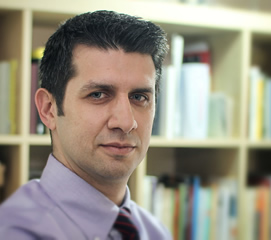

We build adaptive systems that learn from the human mind — sensing cognitive, emotional and behavioral states in real time, and shaping intelligent environments that respond.
The laboratory studies how humans think, feel, decide, learn and interact with intelligent environments — and operates at the intersection of seven disciplines.
To create intelligent environments capable of sensing, understanding, predicting and enhancing human experiences.
Can machines understand human emotions as accurately as humans?
Can we create faithful computational representations of human cognition?
Can virtual environments adapt themselves according to user state?
Can humans and AI collaborate as a single cognitive system?
Can intelligent systems respond to brain activity within milliseconds?
The IBCS Lab brings together researchers across artificial intelligence, signal processing, neuroscience and immersive computing.

Dr. İnce leads the IBCS Lab, bridging the gap between computational systems and human neurophysiology. His research spans brain–computer interfacing, multi-modal sensor fusion, robot audition, affective computing and wearable technologies. He is founder/director of the User Experience Laboratory and co-founder/director of the Soft Sensors Laboratory at ITU.
The research team — PhD, MSc and undergraduate researchers, and alumni in academia and industry — is growing. Full member profiles, research topics and publications are listed on the coordinator's website.
View full team →From neuroadaptive VR to defense and urban experience analytics — each application pairs a problem with technologies, active projects and expected impact.
VR environments that respond to emotion, stress, attention and cognitive workload — for training, therapy, education and simulation.
Computational models of cognition, emotion, decision-making and behavior for healthcare, training and prediction systems.
Adaptive learning systems with real-time measurement of engagement, cognitive load and attention in digital learning.
Stress detection, mental wellbeing, rehabilitation and neurofeedback — including dentistry and medical training environments.
Understanding how humans experience cities, architecture and public spaces by combining VR, eye-tracking and physiological sensing.
Situational awareness, decision-making, cognitive resilience and mission readiness in immersive training environments.
Humans collaborating with robots, drones and AI agents. How can intelligent agents truly understand their human teammates?
A selection of peer-reviewed work spanning robot audition, affective computing, BCI, soft robotics and human–computer interaction. Full list on Google Scholar.
Innovation · Excellence · Humanity
Graduate & undergraduate positions in neuroadaptive systems, BCI and immersive computing.
Joint research with academic groups across neuroscience, AI and HCI.
Bringing BCI and affective computing into real products and everyday urban life.
Prospective MSc & PhD students are encouraged to reach out directly.